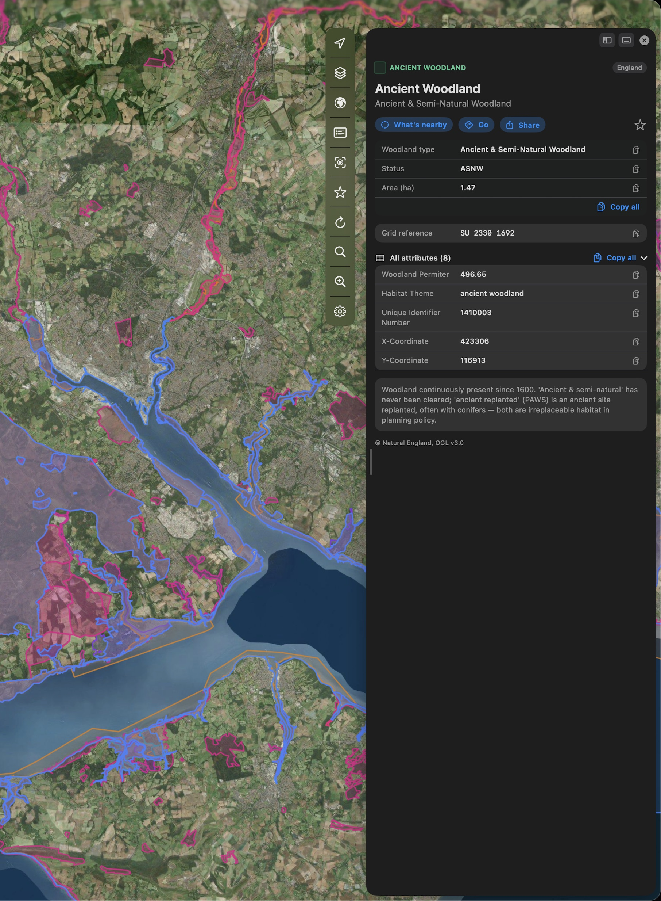
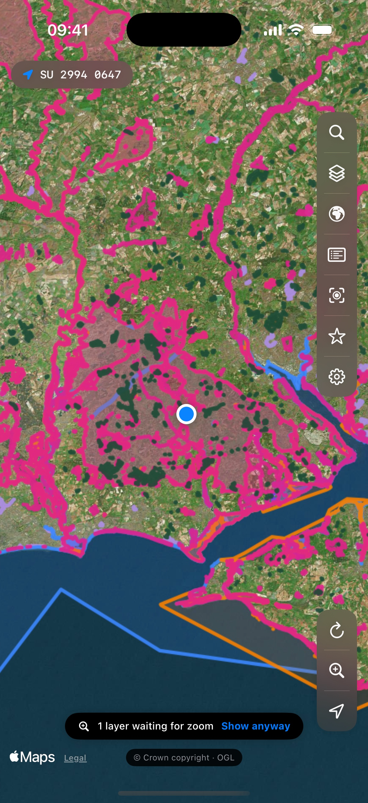
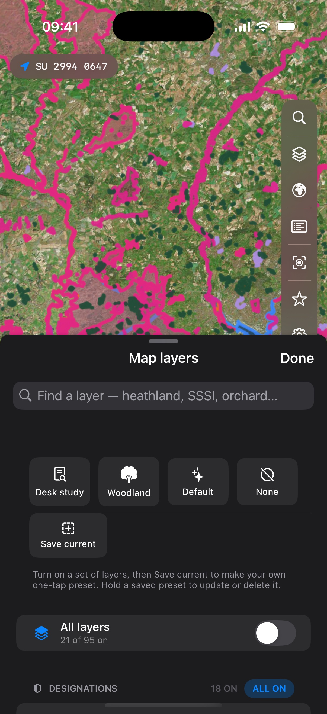
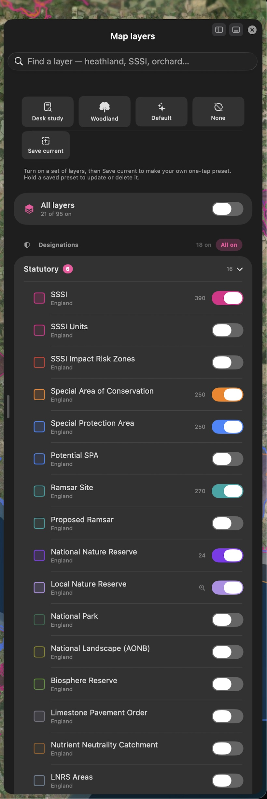
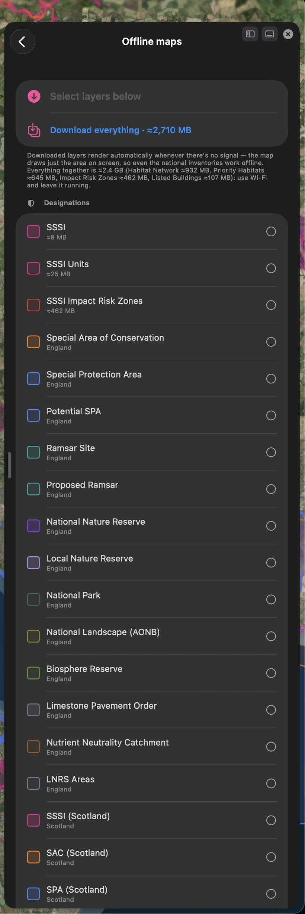

Habitat & heritage mapping
Every designation.
One map.
Merestone puts protected sites and designations on one fast, native map, SSSIs, SACs and SPAs, ancient woodland, priority habitats and listed heritage across the UK, with Ireland, France, Spain, Portugal, the Netherlands and Belgium alongside, streamed live from official open data. Built for ecologists, land professionals and everyone who works outdoors.

What makes it different
The official data, without the fifteen browser tabs.
A designation check normally means a slow web GIS on a laptop, or squinting at a government portal in a field with one bar of signal. Merestone is the same authoritative data on a map that opens instantly and works offline.
Official layers, seven countries
Designations, habitats, heritage, landscape and access data from the agencies that publish it, Natural England, Historic England, NatureScot, Natural Resources Wales and DAERA in the UK, the NPWS in Ireland, and their counterparts in France, Spain, Portugal, the Netherlands and Belgium, streamed straight from the source.
Tap anything for its record
Every shape opens its official record, designation details, condition, areas and links. Where features stack on top of each other, a what's-here list untangles them.
An instant desk study
Search around here scans every layer within a radius of any point, with distances and directions, and writes it up as a dated PDF listing every record and the layers that came back empty. Or search by site name, by place, or by the grid reference each country uses.
A whole country, offline
Download single layers or everything for a country you've unlocked, with the size shown before it starts. Downloaded layers draw automatically the moment you lose signal, so surveys keep working in the middle of nowhere.
Made for the field
One-handed controls by your thumb, one-tap grid-reference copy, saved layer presets, and favourites in folders with CSV export, ready to paste into a report.
Licensed properly
Every layer is used under its publisher's own licence, the Open Government Licence for most of the UK, and credited in the app and in the PDF. Merestone is an independent app, not affiliated with Defra, Natural England, the MAGIC service or any other government body.
In the field
Pocket-sized designations.
The full app on your iPhone, one-handed controls by your thumb, offline layers when the signal drops, and the grid reference always one tap from your clipboard.



On the desk
The desk-study machine.
Apple-Maps-style floating panels on the Mac: layers, legend, offline downloads and full records beside the map, resizable and draggable to either edge.


One purchase, four devices
Plan on the iPad, check it on the Mac, carry it on the iPhone, glance at your wrist.
iPhone & iPad
The full app, arranged for one hand on iPhone, with location, zoom and refresh by your thumb, and desk-study scale on the iPad's big canvas. Downloaded layers work offline. Nine app-icon colours, if you like that sort of thing, including Pride.
Mac
A real Mac app with a real menu bar, keyboard shortcuts for search, layers and zoom, Apple-Maps-style floating panels you can move and resize, and a trackpad zoom mode. The desk-study machine.
Apple Watch
Open it in a site and your wrist shows the habitat you're standing in, or the nearest designations around you, with distances and grid references. No phone out of the pocket.
The data
Most UK layers contain public sector information licensed under the Open Government Licence v3.0, and Irish layers are CC BY 4.0. Every layer names its publisher and licence in the app and in each PDF. Base map © Apple. Requests go straight from your device to the official services.
The promise
Free to start. Pay for the countries you use.
No account, no tracking. The data streams from official government services straight to your device, and your favourites and downloads stay yours. Every country's statutory core and a 250 m search are free. Unlock a country once and it's yours on iPhone, iPad, Mac and Apple Watch, with nothing to renew, or subscribe for every country. The PDF and offline downloads come with the unlock.